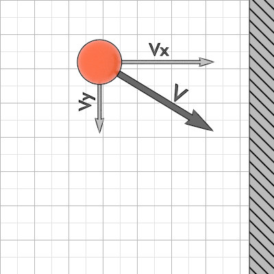

I created a box with a ball in it. I gave this ball an initial velocity and coded a basic collision against the walls. The velocity component perpendicular to the wall flips its direction as you can see in the images below:

Ball and its velocity before (left) and after (right) a wall collision.
Once the wall collision was implemented, I added an additional ball to the box and I started to think how to solve the two disk collision problem.
Given the radius, position and velocity of two balls just before the collision, find the resulting velocities of both bodies.
The first idea that came to my mind was to treat the disk collision as if there was a wall tangent to both balls, as you can see in this figure:
Two balls and their velocities before (left) and after (right) a collision, with an imaginary wall between them.
Linear algebra gives us the tools to calculate the final velocities. First of all, we will make a change of basis from screen basis to collision basis, that basically consists of a 2D rotation. The rotation angle is given by the angle between the horizontal axis (X screen basis axis) and the vector that join both ball centers:
Diferent system coordinates to calculate the velocity changes.
Next step consist of rewritting the initial velocity vectors in the collision basis using the change of basis matrix (2D rotation matrix). Once the velocity vectors are in the collision basis, a linear transformation is applied to them, similar to the "flip direction" transformation used in the wall collision.
This type of transmormation is very easy to make is this vector space, and that's why I made the change of basis. Here you can check the diagram:
Algebra diagram. S(v) is refered to vector v expressed in screen coordinates. C(v) is vector v in collision coordinates.
The final step is to revert the velocity vectors to the screen basis using the inverse change of basis matrix and we are good to go.
Here is the code of the full transformation in Python:
import numpy as np
def colTransformation(V1, V2, angle):
'''Function that recieves two initial velocities (V1, V2) and the angle between X screen axis and X colision axis
and returns the final velocities'''
#Define the change of basis matrix and its inverse
M = np.array([[np.cos(angle), -np.sin(angle)], [np.sin(angle), np.cos(angle)]])
Mi = (1/np.linalg.det(M))*np.array([[np.cos(angle), np.sin(angle)], [-np.sin(angle) ,np.cos(angle)]])
#Change of basis
V1colisionBasis = np.dot(M,V1)
V2colisionBasis = np.dot(M,V2)
#flip the velocity component perpendicular to the imaginary wall
V1colisionBasis[0] = -V1colisionBasis[0]
V2colisionBasis[0] = -V2colisionBasis[0]
#Revert the change of basis
V1 = np.dot(Mi,V1colisionBasis)
V2 = np.dot(Mi,V2colisionBasis)
return V1, V2
After the python implementation, I test the proposed solution in various simulations with random initial velocities. The results were discouraging.
Although in some cases the collision was behaving quite as expected, the majority of interactions were unnatural and didn't make any physical sense. I checked my notes and I saw that this soution was not taking into account the momentum conservation. I could see it in the simulation when a high speed ball hit a low speed ball and they were not changing speeds but only directions. That's because of the idea to treat the collision as if there was a wall (infinite mass) when in the reality the mass of the other particle is the same as the colliding particle.
This is the main error found in the proposed solution, but there are more errors caused by not taking into account diferent collision scenarios, like velocities with the same direction but diferent speed.
I'm working now in this solution, implementing it into python in order to check if the problem is properly solved.
Here you can see the code used to simulate the box with balls:
The Schulze election method was created by Mark Schulze in 1997 and it was originally design to choose a unique winner from a set of preferential votes. Non the less, this method also gives information about the gradiation of the different options of the same votation.
The Schulze method is used now a days by popular entities like Debian, Ubuntu, Wikipedia and Gentoo, in order to do internal elections.
In what follows we learn the algorithm to calculate the Schulze election method:
In 1963, Edward Lorenz introduced the concept Lorenz system to describe a particular dynamic system that behaves chaotically. The differential equations that describe the movement have three parameters a, b and c. Usually a = 10, c = 8/3 and b changes to give variation to the movement. A tiny variation in the parameters changes enormously the trajectory of the movement.
Here I'm using C programming to collect the trajectory data and Jupyter notebook to plot the results:
using namespace std;
int main()
{
int tmax = 10000;
double h = 0.005;
double sigma = 5;
double b = 8./3.;
double r = 28;
double x0 = 5;
double y0 = 3;
double z0 = 2;
float v[3][tmax];
float u[3][tmax];
v[0][0] = x0;
v[1][0] = y0;
v[2][0] = z0;
ofstream arxiu;
arxiu.open ("dades.txt");
for (int j = 0; j < tmax; j++){
arxiu << "t" << "20" << " ";
for (int i = 0; i < 3; i++){
switch (i){
case 0:
u[i][j] = sigma*(v[1][j]-v[0][j]);
break;
case 1:
u[i][j] = v[0][j]*(r-v[2][j])-v[1][j];
break;
case 2:
u[i][j] = v[0][j]*v[1][j]-b*v[2][j];
break;
}
v[i][j+1] = v[i][j] + h*u[i][j];
arxiu << v[i][j] << " ";
}
arxiu << endl;
}
arxiu.close();
return 0;
}